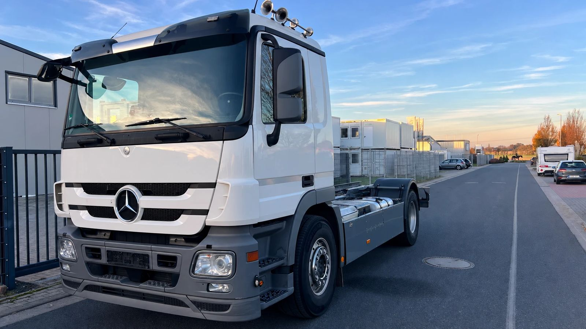
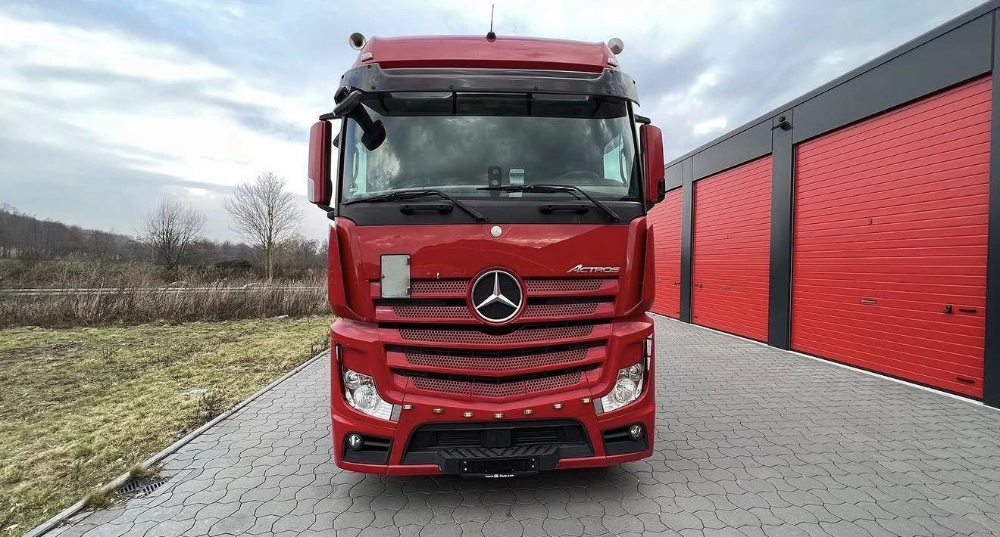
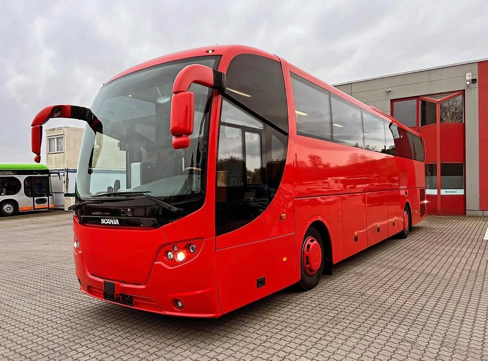

Zwei Sattelzüge, gleich schwer, gleiche Strecke, und trotzdem zahlt der eine deutlich mehr Maut. Der Grund steht im Fahrzeugschein: die Euro-Norm. Sie bestimmt, was ein Kilometer kostet, in welche Städte ein Fahrzeug einfahren darf und wie viele Käufer es später noch findet.
In diesem Beitrag erklären wir, was hinter Euro 3, Euro 4, Euro 5, EEV und Euro 6 steckt, wie Sie die Schadstoffklasse Ihres LKW oder Busses herausfinden und was Euro 7 für Fahrzeuge bedeutet, die schon auf der Straße sind.
Was ist eine Euro-Norm?
Euro-Normen sind die Abgasstufen der EU. Sie legen fest, wie viel Stickoxide (NOx), Partikel und andere Schadstoffe ein neues Fahrzeug höchstens ausstoßen darf. Mit jeder Stufe wurden die Grenzwerte strenger.
Drei Schreibweisen sorgen immer wieder für Verwirrung, meinen aber dasselbe:
- Römische Zahlen wie Euro VI stehen für schwere Nutzfahrzeuge: LKW und Busse.
- Arabische Zahlen wie Euro 6 stehen eigentlich für PKW und Transporter. Im Alltag sagen die meisten aber auch beim LKW „Euro 6“.
- Kürzel wie S5 oder S6 sind die Schadstoffklassen, die Sie in Mauttabellen und auf Abrechnungen finden. S6 entspricht Euro VI.
Es gibt noch einen technischen Unterschied. Bei LKW und Bussen wird der Motor auf dem Prüfstand gemessen, die Grenzwerte gelten in Gramm pro Kilowattstunde. Bei Transportern wird das ganze Fahrzeug gemessen, in Gramm pro Kilometer. Die Zahlen lassen sich deshalb nicht direkt vergleichen.
Euro I bis Euro VI im Überblick
Die Jahreszahlen nennen den Zeitraum, in dem die Stufe erst für neue Typen und dann für alle Neufahrzeuge verbindlich wurde (Umweltbundesamt, DieselNet). Die Grenzwerte gelten für Dieselmotoren im stationären Prüfstandstest.
- Euro I: ab 1992/93, NOx 8,0 g/kWh, Partikel 0,36 g/kWh (Motoren über 85 kW)
- Euro II: ab 1995/96, NOx 7,0 g/kWh, Partikel zuletzt 0,15 g/kWh
- Euro III: ab 2000/01, NOx 5,0 g/kWh, Partikel 0,10 g/kWh
- Euro IV: ab 2005/06, NOx 3,5 g/kWh, Partikel 0,02 g/kWh
- Euro V: ab 2008/09, NOx 2,0 g/kWh, Partikel 0,02 g/kWh
- Euro VI: ab 2013/14, NOx 0,4 g/kWh, Partikel 0,01 g/kWh, zusätzlich ein Grenzwert für die Anzahl der Partikel
Von Euro I zu Euro VI ist der erlaubte Stickoxid-Ausstoß also auf ein Zwanzigstel gesunken. Das ging nur mit neuer Technik. Ab Euro IV kam bei vielen Motoren die Abgasnachbehandlung mit AdBlue (SCR-Katalysator), bei Euro VI zusätzlich fast immer der Partikelfilter.
Vorsicht beim Baujahr: Es verrät die Euro-Norm nicht sicher. Hersteller haben in den Übergangsjahren oft beide Stufen parallel gebaut, und vorhandene Fahrzeuge durften noch abverkauft werden. Ein LKW aus dem Jahr 2013 kann Euro V oder Euro VI haben. Verlässlich ist nur der Eintrag in den Papieren.

Was bedeutet EEV?
EEV steht für „Enhanced Environmentally Friendly Vehicle“, also besonders umweltfreundliches Fahrzeug. Die Stufe liegt zwischen Euro V und Euro VI und war freiwillig. Viele Stadtbusse wurden so gebaut. Bei der Maut hilft das allerdings nicht: EEV Klasse 1 steht in derselben Kategorie wie Euro V.
Euro VI A, B, C, D und E
Euro VI ist nicht gleich Euro VI. Innerhalb der Norm gibt es die Stufen A bis E, die nacheinander eingeführt wurden. Stufe E wurde 2021 für neue Typen und 2022 für alle Neufahrzeuge verbindlich und ist die aktuelle Euronorm bei LKW und Bussen. Verschärft wurden vor allem die Messungen im echten Fahrbetrieb und die Überwachung der Abgasanlage. Bei der deutschen Maut zahlen alle Euro-VI-Stufen denselben Luftschadstoff-Anteil.
Und bei Transportern?
Bei Transportern bis 3,5 Tonnen gelten eigene Stufen. Euro 5 wurde je nach Gewichtsklasse ab etwa 2011 bis 2013 Pflicht, Euro 6 ab 2015 oder 2016 (DieselNet). Die feineren Kürzel wie Euro 6d oder 6e gehören ebenfalls zu dieser Reihe. Bei schweren Transportern kann auch eine Zulassung nach der LKW-Norm vorkommen, darum zählt auch hier der Eintrag im Fahrzeugschein.
Wo steht die Euro-Norm im Fahrzeugschein?
In der Zulassungsbescheinigung Teil I, dem Fahrzeugschein, sind vor allem diese Felder wichtig:
- Feld V.9: die Abgasvorschrift, oft mit der Euro-Stufe.
- Feld 14: die Schadstoffklasse in Klartext, wenn dort etwas eingetragen ist.
- Feld 14.1: ein Code. Die letzten Stellen sind die Emissionsschlüsselnummer, die Sie in den Tabellen des Kraftfahrt-Bundesamts nachschlagen können.
In alten Fahrzeugscheinen, die vor Oktober 2005 ausgestellt wurden, steht die Nummer unter „Schlüsselnummer zu 1“.
Wenn Sie sich unsicher sind: Ein Foto des Fahrzeugscheins reicht einem Händler in der Regel, um die Schadstoffklasse zu bestimmen.
Was die Euro-Norm im Alltag bedeutet
LKW-Maut
Am stärksten spürt man die Euro-Norm bei der Maut. Der Satz setzt sich aus vier Teilen zusammen: Infrastruktur, Luftverschmutzung, Lärm und CO2. Luftverschmutzung und CO2 hängen an der Abgasnorm (Anlage 1 zum Bundesfernstraßenmautgesetz).
So viel kostet ein Kilometer für einen Sattelzug mit mehr als 18 Tonnen und fünf Achsen, jeweils in der CO2-Klasse 1:
- Euro VI: 34,8 Cent
- Euro V und EEV Klasse 1: 38,9 Cent
- Euro IV: 41,4 Cent
- Euro III: 47,8 Cent
- Euro II: 51,1 Cent
- Euro I und schlechter: 51,6 Cent
Bei 100.000 mautpflichtigen Kilometern im Jahr sind das zwischen Euro V und Euro VI rund 4.100 Euro, zwischen Euro III und Euro VI schon rund 13.000 Euro. Rechnen Sie mit Ihrer eigenen Strecke: Der Abstand ist je nach Gewicht und Achszahl anders.
Dazu kommt seit Dezember 2023 die Einteilung in die CO2-Klassen 1 bis 5. Fahrzeuge ohne CO2-Zertifizierung, also praktisch alle vor 2019 gebauten, stehen in der teuersten Klasse 1. Nur emissionsfreie Fahrzeuge der Klasse 5 zahlen keinen CO2-Anteil.
Umweltzonen und Plaketten
In deutsche Umweltzonen darf nur, wer die passende Plakette hat. Bei Diesel-Fahrzeugen gilt (Bundesumweltministerium):
- Keine Plakette: Euro I und schlechter
- Rot: Euro II, oder Euro I mit Partikelfilter
- Gelb: Euro III, oder Euro II mit Partikelfilter
- Grün: Euro IV und besser, oder Euro III mit Partikelfilter
Weil die meisten Umweltzonen nur noch grüne Plaketten zulassen, ist Euro IV in vielen Städten die Mindestanforderung.

Fahrverbote im Ausland
Andere Länder gehen eigene Wege. Bekannt ist die Inntalautobahn A12 in Tirol: Auf dem Abschnitt zwischen Langkampfen und Zirl sind LKW über 7,5 Tonnen bis einschließlich Euro V verboten, von einigen Ausnahmen abgesehen darf nur Euro VI fahren (WKO Tirol, Stand November 2024). Wer regelmäßig über den Brenner fährt, kommt um Euro VI also kaum herum.
Kfz-Steuer
Bei der Steuer spielt die Euro-Norm kaum eine Rolle, das wird oft überschätzt. Für LKW und Busse über 3,5 Tonnen zählt das Gewicht, und den niedrigsten Satz gibt es bereits ab der Schadstoffklasse S2 (§ 9 KraftStG). Zwischen Euro III und Euro VI macht das in der Steuer keinen Unterschied.
Und bei Bussen?
Busse sind von der LKW-Maut befreit. Die Euro-Norm ist trotzdem wichtig:
- Umweltzonen: Stadtbusse und Reisebusse müssen genauso in die Zonen einfahren dürfen wie jeder LKW.
- Linienverkehr: Bei Ausschreibungen legen Auftraggeber oft eine Mindestnorm fest.
- Reiseverkehr: Städte im Ausland haben eigene Zufahrtsregeln, die sich an der Abgasnorm orientieren können.
- Weiterverkauf: Neuere Stufen sind im Inland gefragter als ältere.
Welche Busse es gibt und wie sie sich unterscheiden, lesen Sie im Beitrag Linienbus, Überlandbus, Reisebus.

Was bringt Euro 7?
Euro 7 ist bereits beschlossen (Verordnung (EU) 2024/1257). Die Termine:
- PKW und Transporter: neue Typen ab 29. November 2026, alle Neufahrzeuge ab 29. November 2027
- LKW und Busse: neue Typen ab 29. Mai 2028, alle Neufahrzeuge ab 29. Mai 2029
Neu ist, dass nicht mehr nur der Auspuff zählt. Die Verordnung erfasst auch Bremsabrieb und Reifenabrieb und verlangt, dass die Werte über eine längere Lebensdauer eingehalten werden. Für Fahrzeuge, die schon zugelassen sind, ändert sich dadurch nichts: Euro 7 gilt nur für Neufahrzeuge. Ein Euro-VI-LKW darf also weiterfahren. Mit der Zeit rückt er damit aber vom neuesten Stand nach hinten, so wie heute Euro V.
Was ist ein LKW mit Euro 3, 4 oder 5 heute wert?
Oft weniger, als Verkäufer erwarten. Verkäufer schauen meist auf Baujahr und Ausstattung. Käufer schauen zuerst auf die Norm:
- Die Betriebskosten. Wie oben gerechnet, kostet jede ältere Stufe bei jedem Kilometer mehr Maut. Eine Spedition zieht das vom Preis ab, den sie zu zahlen bereit ist.
- Die Auftraggeber. Viele Verlader schreiben inzwischen Euro VI vor. Ältere LKW fallen damit für viele Touren weg.
- Das Angebot. Wenn Flotten auf Euro VI umstellen, kommen ihre Euro-5-Fahrzeuge gleichzeitig auf den Markt. Käufer haben die Wahl.
- Inseratspreise sind keine Verkaufspreise. Was in Online-Börsen steht, ist der Wunschpreis des Verkäufers.
- Der Weg ins Ausland kostet. Ältere Stufen finden ihre Käufer meist im Ausland. Transport, Papiere und Zoll fließen in jeden Ankaufspreis ein, und nicht jedes Land lässt jede Norm zu.
Ein Verkauf lohnt sich trotzdem fast immer. Ein LKW, der auf dem Hof steht, verdient kein Geld, kostet aber Versicherung, Steuer und Stellplatz. Und mit Euro 7 kommt die nächste Stufe, die ältere Fahrzeuge weiter nach hinten rückt.
Welche Rolle die Norm bei einzelnen Baureihen spielt, zeigen unsere Beiträge zum Actros MP1 bis MP5, zum Mercedes-Benz Atego und zum MAN 12-Tonner.
Kurz beantwortet
Ab wann gibt es Euro 6 bei LKW? Euro VI galt ab 2013 für neue Typen und ab 2014 für alle neu zugelassenen LKW und Busse.
Ab wann gibt es Euro 5 bei LKW? Euro V galt ab 2008 für neue Typen und ab 2009 für alle Neufahrzeuge.
Welche Euro-Norm ist aktuell? Bei LKW und Bussen Euro VI, Stufe E. Euro 7 folgt ab 2028.
Darf ich mit Euro 5 noch fahren? Ja. Ein allgemeines Verbot gibt es nicht, in deutschen Umweltzonen reicht die grüne Plakette. Die Maut ist aber höher, und einzelne Strecken im Ausland sind gesperrt.
Wie finde ich die Schadstoffklasse meines LKW heraus? In der Zulassungsbescheinigung Teil I, in den Feldern V.9, 14 und 14.1.
Wir kaufen Nutzfahrzeuge aller Euro-Normen an
Die ECS Exclusive Commerce Services GmbH aus Gehrden bei Hannover bringt über 30 Jahre Erfahrung im Fahrzeughandel mit und kauft LKW, Sattelzugmaschinen, Transporter, Kleinbusse, Linienbusse und Reisebusse an, von älteren Stufen bis Euro VI, einzeln oder als ganzen Fuhrpark. Mehr dazu finden Sie auf unseren Seiten LKW verkaufen, Transporter verkaufen, Reisebus verkaufen und Linienbus verkaufen.
- Sie schicken uns ein Foto des Fahrzeugscheins und einige Fotos des Fahrzeugs.
- Wir ordnen das Fahrzeug ein, bewerten es und klären offene Fragen am Telefon.
- Sie bekommen ein Angebot.
- Nach Ihrer Zusage erstellen wir den Kaufvertrag und schließen das Geschäft ab.
- Unsere Fahrer holen das Fahrzeug bei Ihnen ab, deutschlandweit.
Rufen Sie uns an oder schreiben Sie uns über die Kontaktseite.
Hinweis: Dieser Beitrag dient der allgemeinen Information und ersetzt keine Rechts- oder Steuerberatung. Alle Angaben ohne Gewähr, Stand: 8. November 2026. Genannte Marken und Modellbezeichnungen gehören ihren jeweiligen Inhabern. Die ECS GmbH ist ein unabhängiger Händler und steht in keiner Verbindung zu den Herstellern.